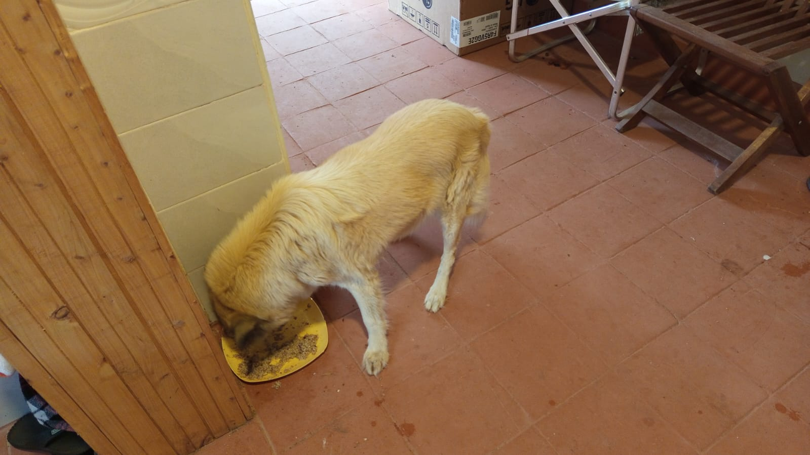

Mucheru World of Golf
Hydraulic engineering, lateral pipeline installations, and championship earthwork shaping advanced concurrently across Mucheru World of Golf on Friday, 16th October 2026, under the direct field leadership of Mr. Gichuhi and Ken:
Golf Course Operational Highlights
Dewatering of Dam 2 reached the threshold level required to begin liner inspection and repair; water pumped from Dam 2 flowed into the main collector drainage trench where the Backhoe Loader and manual crew refined the trench invert for continuous flow; excavation on the second main drainage trench near Gate A continued; lateral drainage trenches were leveled and connected with orange PVC pipes; and Teeboxes 5, 9, and 18 underwent active grading and surface refinement.
- Dam 2 Dewatering & Liner Leak Inspection Commenced: Following steady pumping with motor water pumps, water in Dam 2 was reduced to a shallow pool, enabling repair personnel to walk the exposed geomembrane liner and systematically inspect the basin floor to identify leaking spots requiring patches.
- Evacuated Water Routed to Main Drainage Trench: The pumped effluent from Dam 2 was discharged directly into the primary greens drainage trench, serving as a functional hydraulic flow test; manual crews and the Backhoe Loader worked inside the wet trench bed to clear obstructions, deepen pinch points, and ensure unhindered gravity evacuation.
- Second Main Collector Trench Excavation Near Gate A: Peter Githinji's Backhoe Loader maintained continuous mechanical excavation on the second main drainage trench along the boundary fence alignment near Chaka Farms Gate A, removing heavy subsoil to extend the channel profile.
- Lateral Drainage Trench Leveling & PVC Pipe Laying: Ground crews manually leveled trench beds and applied solvent cement to joint lengths of orange PVC drainage pipes, carefully bedding them into the graded ditches to establish permanent sub-surface green drainage connections.
- Championship Teebox Refinement (Tees 5, 9, and 18): Manual teams actively shaped and refined playing platforms on Teeboxes 5, 9, and 18; on Teebox 5, workers spread fertile red soil adjacent to the 2nd main drainage trench, while grading and contouring continued across platforms 9 and 18.
- Dam 1 Storage Status: Aerial drone survey confirmed Dam 1 remains in optimal condition, holding water securely within its fully anchored geomembrane lining.
18-hole putting green status audit showing the latest work completed and current condition for each green as of October 16, 2026:
| Green | Current Technical & Agronomic State | Milestone Status |
|---|---|---|
| Green 1 | Pop-up sprinkler and irrigation perimeter trenches dug along marked chalk line (Oct 14). | Sprinkler Trenches Complete |
| Green 2 | Pop-up sprinkler and irrigation perimeter trenches dug along marked chalk line (Oct 14). | Sprinkler Trenches Complete |
| Green 3 | Pop-up sprinkler and irrigation perimeter trenches dug along marked chalk line (Oct 14). | Sprinkler Trenches Complete |
| Green 4 | Pop-up sprinkler and irrigation perimeter trenches dug along marked chalk line (Oct 14). | Sprinkler Trenches Complete |
| Green 5 | Ready. Fully established mature championship putting green turfgrass under active pop-up sprinkler irrigation conditioning. | Ready • Established Turf |
| Green 6 | Pop-up sprinkler trenches digging completed around green perimeter collar (Oct 15). | Sprinkler Trenches Complete |
| Green 7 | Drainage outlet trench connecting green 7 to main canal dug and leveled by manual crew (Oct 15). | Outlet Trench Dug • Leveled |
| Green 8 | Pop-up sprinkler trenches digging completed around green perimeter (Oct 15). | Sprinkler Trenches Complete |
| Green 9 | Orange drainage PVC pipe connected and outlet trench leveled leading to main canal (Oct 15). | PVC Connected • Trench Done |
| Green 10 | Pop-up sprinkler trenches digging completed around collar and surrounds (Oct 15). | Sprinkler Trenches Complete |
| Green 11 | Pop-up sprinkler trenches digging completed around green perimeter (Oct 15). | Sprinkler Trenches Complete |
| Green 12 | Pop-up sprinkler trenches digging completed around perimeter collar (Oct 15). | Sprinkler Trenches Complete |
| Green 13 | Pop-up sprinkler trenches digging completed along marked green perimeter (Oct 15). | Sprinkler Trenches Complete |
| Green 14 | Pop-up sprinkler trenches digging completed around green collar (Oct 15). | Sprinkler Trenches Complete |
| Green 15 | Pop-up sprinkler trenches digging completed around outer collar surrounds (Oct 15). | Sprinkler Trenches Complete |
| Green 16 | Pop-up sprinkler trenches digging completed around green perimeter collar (Oct 15). | Sprinkler Trenches Complete |
| Green 17 | Pop-up sprinkler trenches digging completed around green perimeter (Oct 15). | Sprinkler Trenches Complete |
| Green 18 | Pop-up sprinkler trenches dug; riversand applied and leveled across green surface (Oct 14). | Riversand • Sprinkler Trench |
Comprehensive 18-hole championship teebox platform audit tracking earthwork leveling, structural embankments, and playing corridor alignments as of October 16, 2026:
| Teebox | Current Technical & Earthwork State | Platform Status |
|---|---|---|
| Tee 1 | Playing launch platform fully refined, contoured, and graded to final design elevation (Oct 14). | Refined & Graded |
| Tee 2 | Platform earthwork grading and surface refinement completely finished (Oct 15). | Refined & Graded |
| Tee 3 | Playing launch platform completely graded, leveled, and refined to final elevation (Oct 15). | Refined & Graded |
| Tee 4 | Championship launch platform completely graded, leveled, and refined to final elevation (Oct 15). | Refined & Graded |
| Tee 5 Today | Playing platform actively graded and refined with red soil next to 2nd main drainage trench (Oct 16). | Grading & Refining |
| Tee 6 | Precision leveling and compaction completed; fresh delivery of 1 lorry red loam topsoil unloaded at platform surrounds (Sep 26). | Red Soil In • Leveled |
| Tee 7 | Both number 7 teebox platforms actively reshaped, cut, and leveled by crew under Joe Kamau and supervisors (Oct 4). | Both Platforms Reshaped |
| Tee 8 | Graded, leveled, and contour-adjusted; fresh delivery of 1 lorry red loam topsoil unloaded directly on platform (Sep 26). | Red Soil In • Graded |
| Tee 9 Today | Playing launch platform grading and surface refinement actively continued by manual crew (Oct 16). | Refinement in Progress |
| Tee 10 | Playing launch platform shaping and surface refinement completely finished (Oct 13). | Platform Refined |
| Tee 11 | Playing launch platform grading and contour refinement completely finished (Oct 13). | Refinement Complete |
| Tee 12 | Both championship and forward platforms actively shaped, leveled, and refined to finished design elevation (Oct 8). | Shaped & Refined |
| Tee 13 | Playing platform earthworks completely finished, shaped, and refined to final design elevation and contours (Oct 7). | Finished & Refined |
| Tee 14 | Launch platform earthworks completely finished, shaped, and refined to final playing contour (Oct 7). | Finished & Refined |
| Tee 15 | Launch platform shaping completely finished; terrace cut to design elevation and precision leveled (Oct 6). | Platform Reshaped |
| Tee 16 | Surplus red soil moved onto platform; launch terrace completely reshaped and leveled (Oct 5). | Platform Reshaped |
| Tee 17 | Launch platform reshaped, cleared of brush, and graded to playing corridor alignment (Oct 6). | Platform Reshaped |
| Tee 18 Today | Championship launch platform surface grading, red soil leveling, and refinement underway (Oct 16). | Grading & Refining |
Operations Agronomy & Engineering Synthesis
Putting Greens & Hydraulic Milestones: Pop-up sprinkler trenching is 100% dug across all 18 greens; Dam 2 water was successfully lowered to shallow depth, enabling liner leak inspection and repair commencement; evacuated Dam 2 water routed through the main collector trench with machine and manual grading ensuring clean flow; excavation of second main trench near Gate A progressing; leveling of drainage trenches and orange PVC pipe installation actively ongoing.
Championship Teebox Platforms: Teeboxes 5, 9, and 18 underwent active grading, leveling, and topsoil refinement today; Teeboxes 1, 2, 3, 4, 10, 11, 12, 13, 14, 15, 16, and 17 maintain finished design grades.
Comprehensive video field documentation capturing heavy machinery and manual operations on Friday, 16th October 2026: grading and refining teeboxes 5, 9, and 18, leveling drainage trenches and placing orange PVC pipes, dewatering Dam 2 and routing pumped water through the main collector drainage trench, and ongoing excavation of the second main drainage trench near Chaka Farms Gate A.
Photographic field documentation capturing Dam 2 dewatering, liner leak inspection, main drainage trench water routing, second main canal excavation, lateral PVC pipe installation, and teebox platform grading across Mucheru World of Golf:

Dam 1 Storage Status
Aerial drone photograph confirming Dam 1 fully holding clean water securely within its perimeter-anchored black geomembrane liner.

Aerial View: Dewatering Dam 2 Basin
Drone capture showing water pumped down to shallow residual levels with portable pumps deployed to facilitate liner repairs.

Motor Water Pump Stationed at Dam 2
High-capacity portable motor water pump set up on the embankment edge pumping reservoir water through delivery piping.

Dewatering & Liner Inspection in Dam 2
Worker wading through shallow residual water near the suction strainer inspecting the exposed geomembrane for damage.

Spotting Liner Leaks for Dam 2 Repair
Overhead drone capture showing repair crew examining the exposed floor folds of Dam 2 liner to pinpoint leaks and prepare patch repairs.

Dam 2 Discharge Entering Main Drainage Canal
High-volume water pumped from Dam 2 discharging into the main drainage collector trench to evacuate surplus water.

Aerial View: Water Flowing in Main Drainage Trench
Drone view of the straight collector trench cut by the Backhoe Loader carrying evacuated Dam 2 water toward downstream discharge.

Main Greens Drainage Collector Canal Flow
Ground perspective showing the central collector trench filled with water pumped from Dam 2 alongside stockpiled red soil.

Profile of Main Collector Trench with Running Water
Continuous straight perspective showing steady water movement along the excavated main greens collector canal.

Backhoe Loader Clearing Invert for Optimal Flow
Yellow Backhoe Loader using its excavator bucket to deepen and clean the trench bed, ensuring unobstructed drainage flow.

Mr. Gichuhi Inspecting Collector Canal Bed
Site supervisor Mr. Gichuhi and field assistant observing hydraulic flow and checking water depth along the excavated trench.

Manual Crew Refining Main Collector Channel
Drone capture of workers standing in the trench clearing earth clods and leveling the channel bed between Teebox 5 and Dam 2.

Second Main Drainage Trench Near Gate A
Deep mechanical trench profile excavated along the boundary fence line near Chaka Farms Gate A to drain surface runoff.

Backhoe Loader Excavating 2nd Main Trench
Heavy machinery actively digging the second primary collector canal alongside palm plantings and the estate access road.

Aerial View: Grading & Refining Teebox 5
Drone capture showing ground crews with shovels and wheelbarrows spreading red soil and leveling the Teebox 5 launch platform.

Ground Crew Leveling Teebox Platform
Field workers systematically loosening, moving, and grading earth across the teebox playing corridor to design grade.

Spreading Red Soil on Teebox Surface
Laborers spreading fertile red topsoil across the platform to create a level, well-draining seedbed for turf grass.

Earthwork Shaping on Championship Teebox
Ground crew shaping the perimeter batters and refining the playing launch terrace orientation toward target fairways.

Contouring and Leveling Teebox Earthworks
Field team carrying out initial grading along the edge of the teebox terrace, establishing uniform elevation.

Aerial View: Trench Leveling for Drainage Pipes
Overhead view of trenching crew leveling the channel bed alongside the green in preparation for PVC pipe placement.

Aerial View: Precision Invert Leveling on Lateral Trench
High-angle drone view of manual crew carefully setting trench fall angles to ensure unhindered gravity drainage from greens.

Orange PVC Pipe Laid in Leveled Trench
Connected orange drainage PVC pipeline seated securely along the leveled trench invert with solvent cement on site.

Jointing and Placing Orange PVC Drainage Pipes
Labor team aligning and jointing orange PVC drainage pipe sections before lowering them into the leveled lateral trench.
Chaka Farms
Operations across Chaka Farms on Friday, 16th October 2026 maintained strict accountability in dairy production, advanced canine manners and pack socialization, cleared farm drainage systems, and preserved clean compound aesthetics:
Farm Operational Highlights
Dairy production achieved 7.0 Litres gross harvest, with 6.0 Litres sold commercially and 1.0 Litre distributed for routine farm allocations, fully reconciled strictly in Litres. Ken oversaw successful unblocking of blocked sewerage lines. Willy supervised daily kennel sanitation, paw command practice, exercise walks, and morning socialization for Coby, Logan, and Bella. Margaret and Monica maintained pristine compound cleanliness.
- 100% Reconciled Dairy Harvest (7.0 Litres): Kamandau recorded 7.0 Litres gross milk yield across daily milking (4.5L morning session + 2.5L evening session). Commercial dispatches totaled 6.0 Litres (3.5L morning + 2.5L evening). Internal farm allocations accounted for 1.0 Litre (0.5L Gladys staff ration + 0.5L Maasai), ensuring 100% accounting reconciliation strictly in Litres with zero discrepancy.
- Farm Sewerage Clearance & Unblocking: Under the supervision of Ken, farm utility maintenance crews addressed blocked sewerage lines across Chaka Farms facilities, clearing accumulated obstructions to restore free gravitational wastewater flow.
- Canine Manners Training & Morning Socialization: Willy conducted structured kennel cleaning and disinfection, followed by obedience drills reinforcing the "paw" command, leash walking, and exercise routines. Morning socialization was conducted successfully for Coby, Logan, and Bella.
- General Compound Cleanliness & Maintenance: Margaret and Monica carried out comprehensive estate grounds maintenance, sweeping walkways, collecting loose debris, and preserving pristine compound presentation throughout the day.
Official quantitative dairy milking harvest and sales ledger for Friday, 16th October 2026, recording gross yields, commercial dispatches, and internal farm disbursements strictly in Litres:
| Category / Transaction | Morning Session | Evening Session | Daily Total |
|---|---|---|---|
| Gross Milk Harvested | 4.5 Litres | 2.5 Litres | 7.0 Litres |
| Commercial Milk Sales (Dispatched) | 3.5 Litres | 2.5 Litres | 6.0 Litres |
| Internal Farm Allocation — Gladys (Staff) | 0.5 Litres | — | 0.5 Litres |
| Internal Farm Allocation — Maasai | 0.5 Litres | — | 0.5 Litres |
| Internal Farm Allocation — Goat Kids (Weaned) | 0.0 Litres | 0.0 Litres | 0.0 Litres |
| Total Volume Accounted For | 4.5 Litres | 2.5 Litres | 7.0 Litres (100% Reconciled) |
Dairy Accounting & Canine Husbandry Note
Total gross milk harvested of 7.0 Litres is fully accounted for by 6.0 Litres sold commercially and 1.0 Litre in routine farm allocations (0.5L Gladys + 0.5L Maasai). All milk figures are recorded strictly in Litres. In the canine section, morning socialization was successfully conducted for Coby, Logan, and Bella alongside kennel sanitation and paw command obedience exercises.
Field video recording documenting the Chaka Farms canine unit kennel manners training session overseen by Willy, highlighting obedience commands, structured stall manners, and calm canine behavior on Friday, 16th October 2026.
Kabete Residence
Comprehensive facility maintenance, structural carpentry, concrete hydration, and pet welfare operations were coordinated and shared by Njoki at Kabete Residence on Friday, 16th October 2026:
Structural Engineering & Property Maintenance Highlights
Maintenance teams utilized a leaf blower to clear thick accumulations of dry tree leaves from the main house terracotta tile roof and gutters; water storage crews washed and scrubbed the elevated top tank and bottom storage tank; carpenters erected ring beam formwork, positioned vertical timber prop poles, reinforced shutter base runners and slab; masons maintained continuous water curing on the river retaining wall, SQ stone walls, and concrete spacers; and domestic pets enjoyed daily walking, exercise, and nutritious meals.
- Main House Roof & Gutter Leaf Clearance: Maintenance personnel climbed the terracotta tiled roof with a motorized backpack leaf blower, systematically blowing clear thick layers of dry leaves and organic debris from roof valleys, tile profiles, and perimeter rain gutters to ensure free rainwater runoff.
- Water Storage Tank Cleaning & Sanitation: Crews conducted comprehensive exterior and interior scrubbing on the elevated top stainless steel storage tank on the steel tower, as well as the large bottom plastic water storage tank on its masonry plinth.
- Beam & Shutter Formwork Carpentry at SQ: Carpenters actively measured, cut, and assembled marine plywood shuttering and timber formwork for the ring beams and curved fireplace walls of the SQ building.
- Reinforcement of Shutter Formwork Base Runner & Slab: Vertical eucalyptus support props were positioned and braced beneath horizontal timber runners and base joists to provide rigid, secure structural support for upcoming overhead concrete slab casting.
- Continuous Concrete & Masonry Water Curing: Masons applied regular water hose spraying to cure the concrete columns and capping beam along the forest river retaining wall, the stone masonry walls of the SQ fireplace, and the precast concrete cover spacer blocks.
- Domestic Pet Welfare & Daily Nutrition: Ajabu the Golden Retriever was taken on an on-leash walk along the paved estate approach and enjoyed nutritious meals indoors; resident cats Reo, Mocha, and Aiko fed peacefully together from individual bowls.
Photographic field documentation capturing rooftop leaf clearance, water tank sanitation, shutter formwork carpentry, structural concrete curing, and domestic pet welfare at Kabete Residence:

Leaf Blower Clearance on Roof Valleys & Gutters
Maintenance worker using a motorized leaf blower to dislodge thick deposits of fallen dry leaves along the terracotta roof edge and guttering.

Main House Terracotta Roof Leaf Clearance
Wide perspective showing the newly painted terracotta tile roof and solar array with maintenance worker blowing clear accumulated leaf litter.

Clearing Rooftop Ridges and Rain Gutters
Operator positioned near the roof ridge directing high-velocity air down tile slopes to prevent rain gutter blockages.

Roof Eaves and Drainage Gutter Maintenance
Close-up view of leaf blower operation clearing overhanging tree leaf debris from perimeter gutters along the residence fascia.

Cleaning Elevated Main Top Water Tank
Maintenance technician on the structural steel tower platform scrubbing down the metallic main top water storage tank.

Washing Main Bottom Water Storage Tank
Worker in high-visibility safety vest using water hose and brush to clean the exterior of the high-capacity lower storage tank.

Setting Up Beam & Curved Shutter Formwork
Carpenters inside the SQ fireplace structure securing curved marine board formwork panels and timber bracing along the stone masonry.

Assembling Ring Beam Timber Shuttering
Overhead view of carpenters fitting and leveling wooden beam formwork atop the stone masonry perimeter walls of the SQ building.

Setting Up Shutter Formwork Base Structure
Carpenters aligning timber joists and support runners across the ceiling level in preparation for the upper slab deck.

Reinforcing Shutter Formwork Base Runners
Top view of structural timber falsework showing horizontal runners securely braced to take the weight of incoming slab formwork.

Vertical Timber Props Supporting Base Slab
Dense vertical eucalyptus timber prop poles installed inside the SQ room to support the overhead shuttering and prevent deflection.

Cutting Marine Board Panels for Shuttering
Carpenters using hand saws to measure and cut film-faced marine plywood boards to exact dimensions for wall and beam shuttering.

Water Curing Masonry Walls at SQ Fireplace
Continuous water hose hydration applied to stone masonry walls, lintels, and timber formwork props to promote optimal mortar strength.

Water Curing Forest River Retaining Wall
Hydration curing on the concrete retaining wall beam and column rebar cage along the forest river boundary.

Curing Concrete Cover Spacers with Tie Wires
Precast cement cover spacer blocks with embedded binding wires undergoing water curing prior to installation under slab rebar.

Ajabu on an On-Leash Paved Walk
Resident Golden Retriever Ajabu enjoying an on-leash afternoon walk along the paved stone pathway in great health.

Perimeter Exercise Walk with Ajabu
Ajabu on leash during his daily exercise walk along the paved residential street, displaying alert and calm behavior.

Ajabu Dining Indoors
Ajabu enjoying his nutritious daily meal rations indoors on the tiled floor at Kabete Residence.

Reo, Mocha & Aiko Feeding Side-by-Side
All three resident cats—Reo, Mocha, and Aiko—peacefully enjoying their evening meal together from individual stainless steel bowls.
Amani Cottage
Facility upkeep and housekeeping operations were conducted at Amani Cottage on Friday, 16th October 2026 under the dedicated supervision of Jane, preserving immaculate interior standards and pristine garden grounds:
Cottage Operational Highlights
Jane executed thorough sanitation, dusting, and floor maintenance across both upstairs and downstairs living suites; grounds personnel swept the lawn and garden pathways, collecting dry fallen leaves into disposal sacks; and visual inspection of the utility water meter confirmed an active reading of 5040.7 m³, tracking 2.0 m³ (2,000 Litres) consumed across 48 hours for cottage domestic upkeep and garden care.
- Multi-Level Interior Housekeeping: Jane carried out thorough cleaning and sanitation across upstairs bedroom suites and downstairs living areas, polishing wooden floors, dusting surfaces, and arranging furnishings to maintain pristine hospitality standards.
- Lawn Sweeping & Garden Leaf Collection: Ground maintenance staff thoroughly raked and swept the front lawn and stone garden walkways, gathering dry tree leaves and organic debris into heavy sacks for clean estate aesthetics.
- Cottage Water Meter Consumption Audit: Visual meter inspection recorded an active reading of 5040.7 m³ on Friday, 16th October (up from 5038.7 m³ on Wednesday, 14th October), confirming a steady 48-hour consumption of 2.0 m³ (2,000 Litres) across cottage domestic upkeep, bathroom facilities, and lawn maintenance.
Photographic field documentation capturing compound lawn sweeping, fallen leaf collection, and utility water meter tracking at Amani Cottage:

Lawn Sweeping & Leaf Collection
Groundsman gathering dry fallen tree leaves into a large sack along the stone garden pathway bordering the Amani Cottage lawn.

Bagging Organic Garden Debris
Field worker completing leaf cleanup under mature shade trees, bagging garden debris to ensure pristine grounds presentation.

Amani Cottage Utility Water Meter (5040.7 m³)
Dial inspection showing 5040.7 m³ on Friday, 16th October, recording 2.0 m³ (2,000 Litres) consumed across 48 hours for cottage and lawn upkeep.